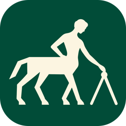

My research interests lie in geometric group theory and low-dimensional topology.
Most of the questions I think about concern the geometry of linear groups in
characteristic zero. In other words, I multiply two-by-two matrices for a living.
I received my PhD from UC Berkeley and my undergraduate degree from UC Santa Barbara.
A workspace for mathematical research.
Each AlphaCentaur project integrates tools for all aspects of mathematical workflow. You can read, write, compute, draw, think, and create all in one interface that is easy for both human and AI collaboration. AlphaCentaur can work with a built-in chat feature, or you can use an MCP through Claude Code or Codex.

AlphaCentaurA place to collect the ideas, calculations, and sources behind a mathematical question.
Explore how two matrices generate a free subgroup, using dynamics on the projective line.
To show that a group is free, look for disjoint subsets of a space that are moved into one another by its generators.
Use the action on the projective line. Track a point through a reduced word and observe which region contains the result.
Keep executable notebooks alongside the questions that led to them.
from fractions import Fraction def A(x): return x + 2 [A(Fraction(n, 2)) for n in range(-2, 3)]
[1, 3/2, 2, 5/2, 3]
Keep formal proofs beside the notes and calculations that inspired them.
variable {G : Type*} [Group G] theorem identity_mul (g : G) : 1 * g = g := by simp
Proof checked
Write a manuscript and build a PDF in the same project.
Research notes
1. Introduction. We study a pair of matrices through their action on the projective line. This perspective turns a question about words in a group into one about dynamics.
2. The construction. Let X and Y be disjoint subsets. The ping-pong lemma gives a criterion for freeness.
Build a presentation alongside your research.
Two generators. Two regions.
One way to see a free group.
Bring papers and references together with the work they inform.
Sketch a picture or work through an argument beside your other project files.
Discuss your project in the built-in chat, or connect Claude Code or Codex through MCP.
Follow saved changes and see where shared versions came from.
I am currently organizing a seminar titled Geometry of Linear Groups. At UC Santa Cruz I have taught Number Theory, Graph Theory, College Algebra, and Calculus 2.
Before that, I was a GSI for more than a dozen courses at UC Berkeley, and a TA at UC Santa Barbara. I have also taught for Mt. Tam College at San Quentin State Prison, and the Project for Inmate Education at Santa Cruz Main Jail.